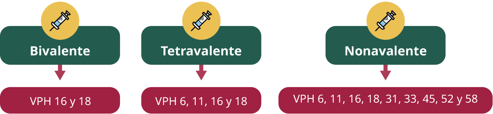

2. Protección Específica: Vacunación contra el VPH
Los tipos de vacunas que se encuentran en el Compendio Nacional de Insumos para la Salud de México son:

La vacunación ha demostrado ser altamente efectiva en la prevención del CCU y de otras enfermedades asociadas con el VPH (verrugas genitales, cáncer de vulva, vagina, ano, pene y orofaringe).
Página 5 de 12